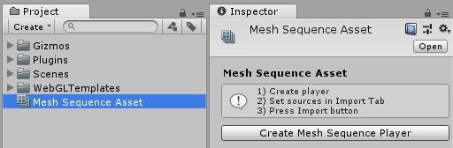

Vertex Animation Tools 3.0 is an robust cross platform toolset for import and fast playback any kind of vertex animation. This package include custom vertex animation exporters from 3ds Max and Cinema4d, two independent pair of runtime player and its corresponding asset which store animation data.
MonoBehaviour components:
- Point Cache Player
- Mesh Sequence Player
Both Players use for rendering built-in Renderers so whis way you can handle players like regular meshes : use Material Property Blocks, enable/disable shadows and so on.
ScriptableObject assets:
- Point Cache
- Mesh Sequence
Each player has its own advantages and limitations, but together they cover most of the vertex animation goals. Follow this comparison chart to choose which one suitable for your purposes.
| Point Cache Player | Mesh Sequence Player | |
|---|---|---|
| Purposes | cloth simulations, deformations, baked skeletal animations | construction, demolition, shatter, fluid simulations, cross sections |
| Required built-in Renderer component | Skinned Mesh Renderer | Mesh Renderer |
| Change mesh topology (vertex count or triangle layout) during animations | NO | YES |
| Input sources (option 1) | .obj file + .pc2 files as clip |
.obj files sequence |
| Input sources (option 2) | .obj file + .obj files sequence as clip |
.obj files sequence |
| Maximum supported clips count | 8 | 1 |
| Maximum number of frames in the clip | infinite | infinite |
| Transfer motion to meshes | YES | NO |
| Surface Constraints | YES | NO |
| Import custom range | YES | YES |
| Change clip`s frames count | YES | NO |
| Subframe interpolation | YES | NO |
| Motoin smoothing | YES | NO |
| Normalize motion speed | YES | NO |
| Clip looping | YES | NO |
| Debug motion paths | YES | NO |
| Weighted normals | YES | YES |
| Flat shading | YES | YES |
| Exclude normals, tangents, uv | NO (always included) | YES |
| Ambient/Inner Occlusion, Cavity | NO | YES |
| Max vertices per mesh | ||
| prior to 2017.3 | 65535 | 65535 |
| 2017.3 and later | 4 billion | 4 billion |
| Verified campatibility with Digital Content Creation applications | ||
| Blender | 1) Built-in export to .pc2 2) Built-in export to .obj sequence |
Built-in export to .obj sequence |
| Cinema 4D | Custom .obj sequence exporter | Custom .obj sequence exporter |
| 3DS Max | 1) Built-in export to.pc2 2) Custom .pc2 exporter 3) Custom .obj sequence exporter |
Custom .obj sequence exporter |
| Maya | 1) Built-in converter to .pc2 2) Thirt party .obj sequence exporter |
Thirt party .obj sequence exporter |
| Marvelous Designer | 1) Built-in export to.pc2 2) Built-in export to .obj sequence |
Built-in export to .obj sequence |
Point Cache Player
Point Cache Player is an MonoBehaviour component that control import and playback of topologically identical vertex animation. Source mesh vertex count must be identical with source clip vertex count. Animation data are stored in Point Cache asset. Multiple Point Cache Players can share one Point Cache asset.
Point Cache asset and Point Cache Player relationship flowchart
All properties in Import tab will be applied after import is done. To import press button

If there are no-apllied changed properties import button displays without icon
Create Point Cache Asset
To create Point Cache asset use one of the following ways:
-
Method 1: Right-click in your project window and select Create > Vertex Animation Tools > Point Cache

- Method 2: Use the menu Assets > Create > Point Cache
This will create a new asset in your project.
Point Cache are project assets and can be shared easily between scenes / players, as well as between different projects. This makes creating animation variants easier (ie. high quality asset for desktop or lower settings for mobile). Selecting a Point Cache asset will show the inspector window with statistcs and one button
Create Point Cache Player
-
Method 1:
- Select Point Cache asset
- Press Create Point Cache Player button. It will create new GameObject with Point Cache Player component that refer on selected Point Cache asset
-
Method 2:
- Create empty Game Object.
- Add component Component > Scripts > Vertex Animation Tools > Point Cache Player
- Select asset in Point Cache field.
When you select a Point Cache Player, the Inspector shows the Import and Playback options. Now you are ready to setup importing.
Setup Meshes

Use Meshes tab to select source and setup meshes. Source recieve Wavefront Obj (.obj).
First(main) Mesh must have same vertices count as clips are, otherwise exporting will be rejected.
Mesh #1 and above can has any vertex count. Vertex Animation Tools automatically transfer clips motion from Mesh #0
to Mesh #1 and above. With this feature you can create Levels Of Details. You do not have to animate all meshes, only #0 one.
Set count of active meshes using buttons.
Once source .obj file selected, statistic string shows mesh info. To refresh info press
-
Smoothing Groups Controls how smoothing groups is applied to a mesh.

-
Normals Defines how the mesh normals are calculated.

- Flip normals reverse surface orientation
- Swap YZ Swap Y and Z axis of coorinates. Suitable when model has Z axis aligned to up direction.
- Scale Mesh scale.
- Mesh compression Comperessing meshes saves space in the built game, but more compression introduces more artifacts in vertex data.
- Optimize mesh This option might take a while but will make the geometry displayed be faster
- Generate materials When Enabled, materials will be created and apllied. Set Disabled if you planned to set materials manually in Renderer component.
- Index format Format of the mesh index buffer data. Index buffer can either be 16 bit (supports up to 65535 vertices in a mesh, takes less memory and bandwidth), or 32 bit (supports up to 4 billion vertices). Supported on 2017.3 or newer.
Setup Clips
 Set count of used clips using buttons.
After source was selected info string displays source statistic.
To refresh info press
If clip and mesh #0 has same vertices count "match up" message will appear.
Clip source can be either a .pc2 file or a .obj files sequences. Each .obj file in sequence
must have same vertices count as mesh #0 defined in Meshes tab.
Set count of used clips using buttons.
After source was selected info string displays source statistic.
To refresh info press
If clip and mesh #0 has same vertices count "match up" message will appear.
Clip source can be either a .pc2 file or a .obj files sequences. Each .obj file in sequence
must have same vertices count as mesh #0 defined in Meshes tab.
- Loop When Enabled aditional last frame will be created from first frame.
- Import Custom Range When off, all frames in source will be exported, otherwise selected range only.
- Transition allows make seamless looped clips. Out of range frames with selected Length will copied into the importing range with dissolving. For Begin transition last frame of importing range should be less than source length. For End transition first frame of importing range should be greater than zero. For smooth loop use trasition with 50-100% length of importing length.
- Change frames count Enables custom frames count. As a result, the clip plays over a greater or lesser number of frames. Descreasing frames count reduce memory usage. Interpolation is the calculation mode of intermediate frames.
- Motion Smoothing There are two parameters of smoothing. Iterations is number of smooth passes. Incresing of Iterations makes more smoothed trajectory. Min-Max and Offset-Length defines smoothing value over clip`s time. Red graph visualize smoothing value. In folowing example Smooth Value is fixed to 1.0 over all clip time, only Iterations is varied. Motion Smoothing care about Loop option, so you able blur Start-End transition and make a clip seamless repeated.
- Normalize Speed This options makes motion speed constant with given value of blend with original speed. When Normalize Speed is 1.0, all vertices moves with constant speed.
- Generate path Motion paths is a position data for vertices over clip time in object`s local space. Useful for debug preview of clip motion. To display generated paths, enable Draw Motion Paths in Playback tab after importing. Not forget to disable Motion Paths before final build because paths data increased asset size. Index step define index stride of vertices which will be used generate motion path. 1 means that all vertices will generate their own path.
Setup Constraints

-
Constraint is a point attached to surface. With Constraints you can manipulate GameObjects -
link it to animated surface, make Look At targets, attach effect emitters itc.
Sails in Ship demo scene uses Constraints to attach ropes.
- Enable mesh gizmo in Playback tab to display source mesh or set all imported clip`s weights to zero
- Create desired count of Constraint using buttons.
- Press Edit mode button.
- With Move and Rotate tools set Constraint position and rotation relative mesh.
- After importing is done, open Playback tab. Transform fields will apear.
- Select Transforms in scene you want to be constrainted.
- Now selected Transforms are linked with animated surface.
Control Playback
- Update Order Event Function used for execution. Select Manually in case player updated by by code by call UpdatePlayback() method
- Use Time Scale When enabled, Time.timeScale affects the speed of Auto Playback, otherwise it does not.
- Active mesh which of imported mesh will be displayed?
Point Cache Player can simultaneously play up to 8 independed clips. Each clip has two main animable properties:
- Weight is the multiplier of the influence of the clip. 0 means that the clip is not affect on object at all. Using Weight you can blend clips and make transtions.
- Normalized Time is a normalized current time of clip .
There are several ways animate Normalized Time: - Using Auto Playback and Duration property. Duration is a clip length in seconds.
- Make Animation clip for Normalized Time property using buit-in Animation. (Make sure that Auto Playback = None)
- Set Normalized Time value in code. (Make sure that Auto Playback = None) You can find this scene RadialBar.unity in examples .

Raycast
Point Cache Player has own implementation of Raycast() method.
Internally it uses SkinnedMeshRenderer.BakeMesh() so
detailed meshes can impact perfomance. For make raycasting faster use low-poly version of your object.
Point Cache Player automatically transfer clip`s motions to these meshes and you will able use any ot they to display or for Raycast()
For example this object use High-polygonal mesh for displaying and low-poly version for raycasting.
Import Meshes setup
You can find this PCP_raycast.unity scene in examples folder.
Mesh Sequence Player
Mesh Sequence Player is an MonoBehaviour component that control import and playback any kind of vertex animation. Its animation data are stored in Mesh Sequence asset. Multiple Mesh Sequence Players can share one Mesh Sequence asset. Main difference with Point Cache Player is a support topology-non-identical animations. Every frame in sequence can have different vertices count. Mesh Sequence Player support only one clip , without frame interpolation.
Point Cache asset and Point Cache Player relationship flowchart
Create Mesh Sequence Asset
To create Point Cache asset use one of the following ways:
- Right-click in your project window and select Create > Vertex Animation Tools > Mesh Sequence
- Use the menu Assets > Create > Point Cache
This will create a new asset in your project.
Mesh Sequence are project assets and can be shared easily between scenes / players, as well as between different projects. This makes creating animation variants easier (ie. high quality asset for desktop or lower settings for mobile). Selecting a Mesh Sequence asset will show the inspector window with statistcs and one button
Create Mesh Sequence Player
-
Method 1:
- Select Mesh Sequence asset
- Press Create Mesh Sequence Player button. It will create new GameObject with Mesh Sequence Player component that refer on selected Mesh Sequence asset
-
Method 2:
- Create empty Game Object.
- Add component Component > Scripts > Vertex Animation Tools > Mesh Sequence Player
- Select asset in Mesh Sequence field.
Setup Import
- .obj sequence Path to any .obj file in sequence. All .obj files in directory will be loaded as sequence
- Import Custom Range When off, all frames in source will be exported, otherwise selected range only.
- Enable UV Determines whether or not the UV coodinates should be imported (if exist) and applied to mesh. Must be enabled if shader use textures
- Calculate normals When on, calculates mesh normals. Must be enabled for lit shaders
-
Smoothing Groups Controls how smoothing groups is applied to a mesh.
-
Normals Defines how the mesh normals are calculated.
-
Smoothing Groups Controls how smoothing groups is applied to a mesh.
- Calculate tangents When on, calculates mesh tangents. Tangents is required for normal-mapped shaders
- Flip normals reverse surface orientation
- Swap YZ Swap Y and Z axis of coorinates. Suitable when model has Z axis aligned to up direction.
- Scale Mesh scale.
- Mesh compression Comperessing meshes saves space in the built game, but more compression introduces more artifacts in vertex data.
- Optimize mesh This option might take a while but will make the geometry displayed be faster
- Generate materials When Enabled, materials will be created and apllied. Set Disabled if you planned to set materials manually in Renderer component.
- Index format Format of the mesh index buffer data. Index buffer can either be 16 bit (supports up to 65535 vertices in a mesh, takes less memory and bandwidth), or 32 bit (supports up to 4 billion vertices). Supported on 2017.3 or newer.
- shader/custom/VertexAnimationTools/UnlitVertexColorAO
- shader/custom/VertexAnimationTools/UnlitVertexColorAOTransparent
-
Cavity this effect colorize vertices by convexity/concavity of the mesh surface.
Range defines Min-Max angle in degrees where value distributed.

- Inner occlusion enables occlusion for points which inside other volume. It is recommended to use together with AmbientOcclusion to accentuate the intersections of surfaces.
- Ambient Occlusion creates soft shadowing, as if the model was lit without a direct light source. like on a cloudy day.
Vertex Color Settings This section controls vertex color effects generation. Displaying vertex color require shader that utilize it. All effects mix additively in vertex color`s alpha channel. Vertex Animation Tools include 2 unlit vertex color shaders:
Control Playback
- Update Order Event Function used for execution. Select Manually in case player updated by by code by call UpdatePlayback() method
- Normalized Time is a normalized current time of clip. This value is animable
- Auto Playback Simple animators for the NormalizedTime value. Works only in Play mode. Select None when updating manually or by script or custom animation
- Frames Per Seconds Auto Playback animation speed
- Use Time Scale When enabled, Time.timeScale affects the speed of Auto Playback, otherwise it does not.